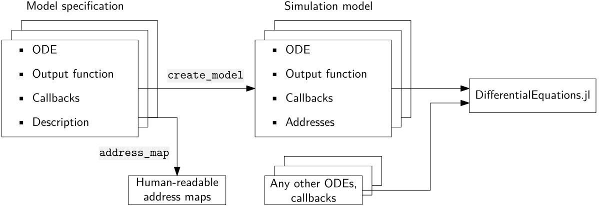

Defining and Simulating Models
This guide explains the mathematical formalism on which this package is based, and how that translates to package usage.
Mathematical Background
In the context of this package, a model is a system ordinary differential equations with events (further hybrid ODE). A model has inputs, states and outputs: inputs are external to the model; states evolve according to some hybrid ODE; outputs are an arbitrary function of time, inputs and states.
Working with Model-Exchange FMUs
A Model-Exchange FMU contains a system described by a differential algebraic equation with events (hybrid DAE), but exposes this to the user as a hybrid ODE by internally resolving all algebraic relations. The FMU can be used to compute derivatives, outputs and event indicators. Performing integration and triggering events at the appropriate time is the task of the external solver. Event handlers inside the FMU are activated when the external solver triggers an event. These handlers change the internal FMU state.
FMIExchange.jl was developed to make the bridge between the FMU and the external solver, which is DifferentialEquations.jl. The main idea is to provide functionality to automatically convert the FMU object as imported by FMIImport.jl to a callable function that can be used by DifferentialEquations.jl and to automatically generate the callbacks to trigger FMU events.
Composing Simulations With FMIExchange.jl
To incorporate FMUs in a DifferentialEquations.jl workflow, we need to fit it into a function of one of the forms du = f(u, p, t) or f!(du, u, p, t). To do this FMIExchange.jl takes the following approach:
- All states are stored in
u - All inputs and outputs are stored in
p
As such, u and p act as memory buffers for the models, and should be some subtype of AbstractVector. If a simulation comprises multiple models, their memory buffers should not overlap to avoid unexpected issues.
Because assigning and keeping track of memory addresses by hand is tedious and error-prone, FMIExchange.jl provides some basic functionality to do this automatically. FMIExchange.jl takes a two-step approach as visualised in the figure below:
- The user must bundle the model ODE, output function and callbacks with some descriptive information in a model specification (
AbstractModelSpecification). This descriptive information should contain human-readable names for the states, inputs and outputs of this model. - FMIExchange.jl transforms a (vector of) model specification(s) into a (vector of) simulation model(s) which correspond to the model definition in the first section. All simulation model instances can be directly simulated with DifferentialEquations.jl (see the tutorial). These simulation models automatically provide the model ODE and output function with a view of the relevant part of the
uandpmemory buffers.
 It is entirely possible to bypass the first step, or to combine FMUs with native ODEs without wrapping the ODEs in a simulation model if so desired.
FMIExchange.jl will not implement any hierarchy in u and p and implement them as a flat Vector{Float64}. To simplify adding interactions between the various models, FMIExchange.jl can also generate address maps that translate the human-readable variable names into indices for the u and p vectors.
To simplify the composition process further, FMIExchange.jl provides functions to perform common operations: automatically calling the model output function, linking different model's inputs and outputs to each other and creating a single DifferentialEquations.jl-compatible ODE function from multiple models. See the Reference section for the corresponding syntax.